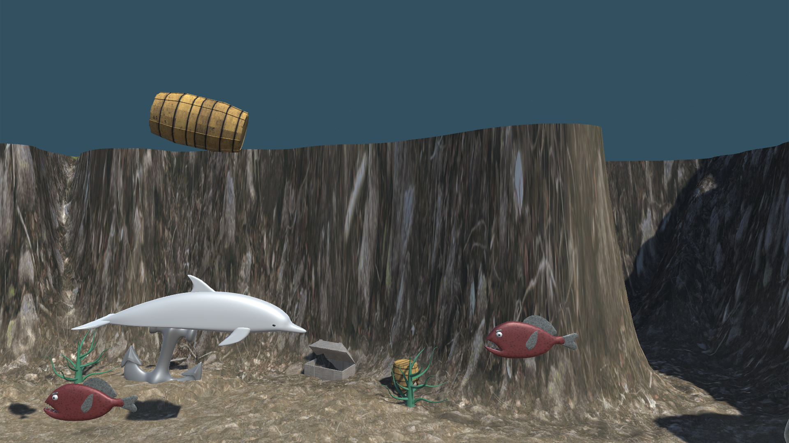
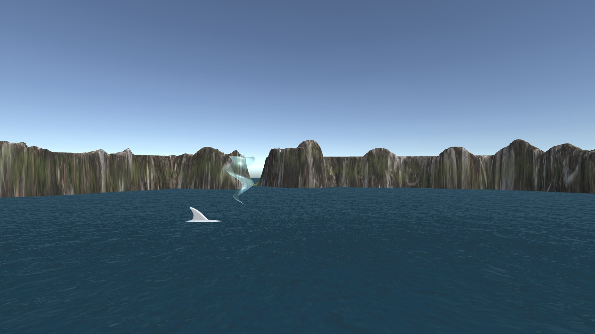

Dolphin Adventure
Dolphin Adventure is an endless runner that puts the player in control of Dexter the Dolphin. The player must take on waves and waves of enemy fish coming at them. There are multiple enemy fish to watch out for including sharks, swordfish and jellyfish traveling at the top the ocean. Points are earned by killing enemy fish.
Different Angles
As the player fights the fish coming at them horizontally, they will also have to keep track of the threats coming at them vertically. Dexter has a unique blow hole attack that lets you attack above you. Barrels and other hazards will fall towards the player.
Health
The player must travel to the top of the level to regain health. There will also be enemies above the water that might attack the player.